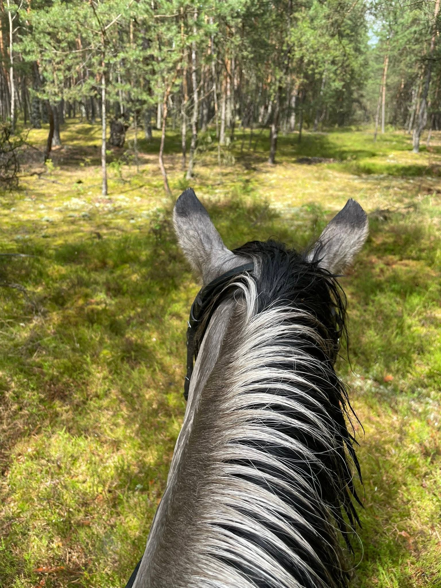
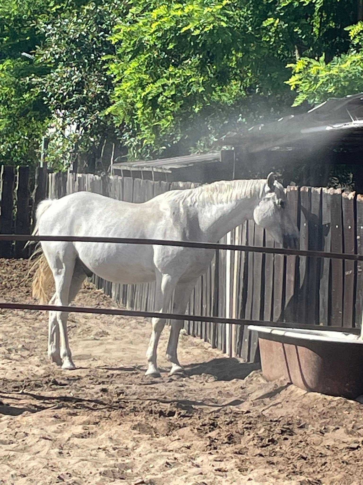
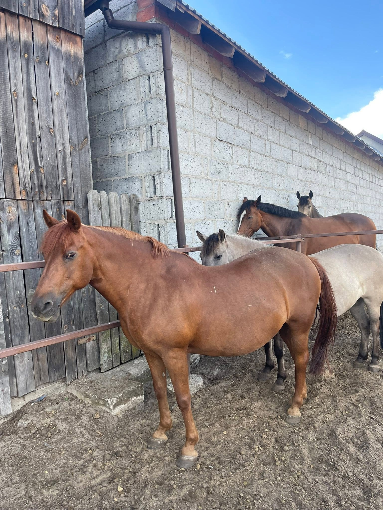
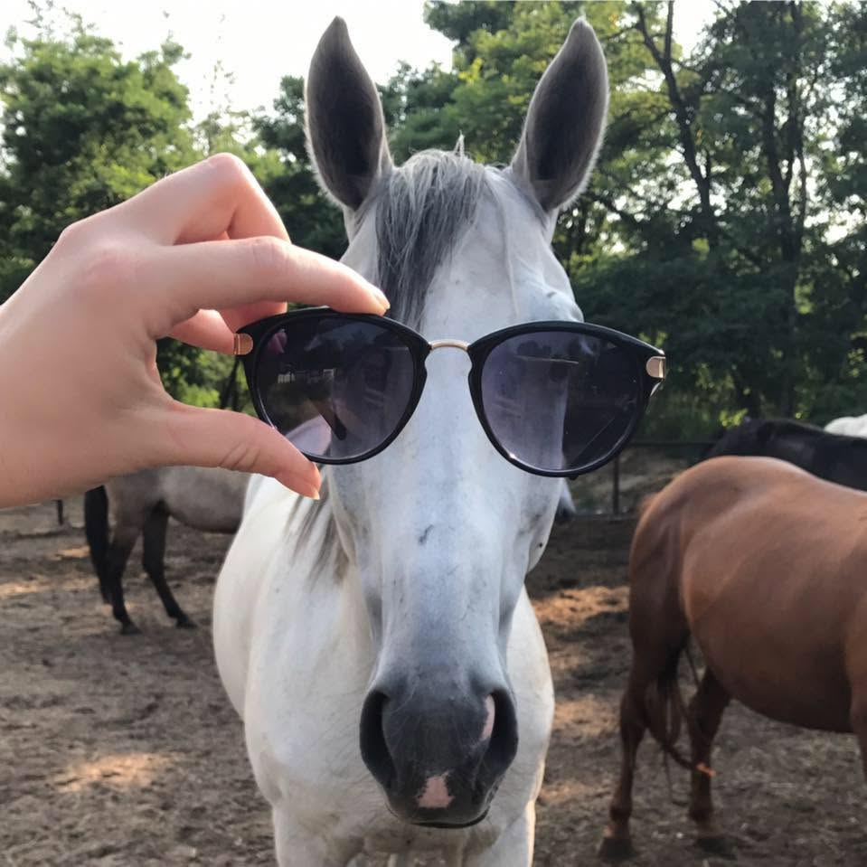
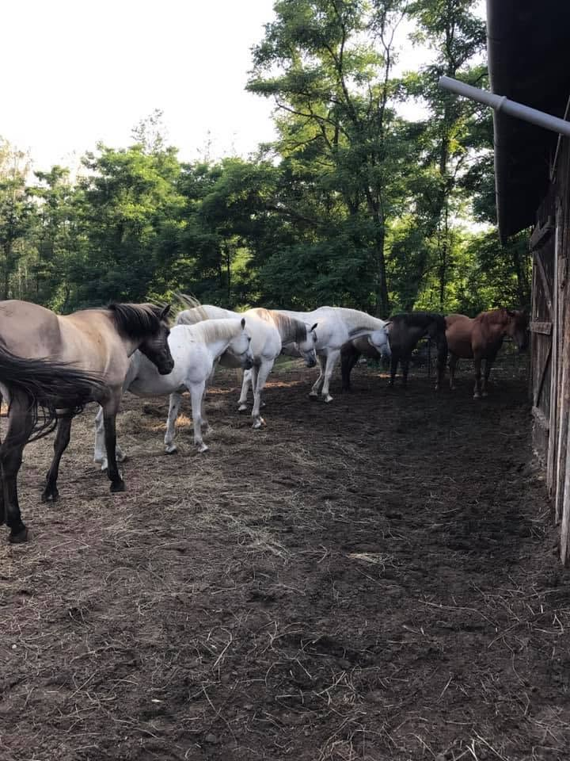
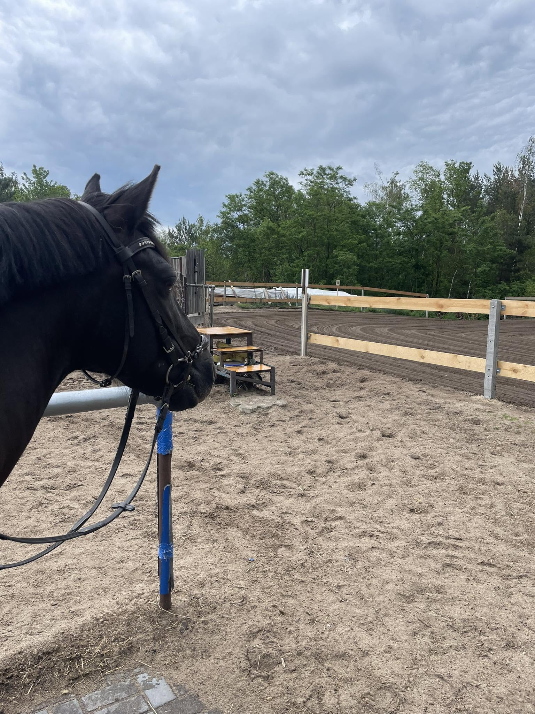

Stajnia Balao · Zakrzew koło Warki
Las, koń i Ty. Godzina, w której nikt niczego od Ciebie nie chce — tylko oddech, natura i bycie tu i teraz.
Natura · Oddech · Tu i teraz
Sesje dla kobiet
Zajmujesz się wszystkim i wszystkimi — a marzenie o koniach czeka cierpliwie. W naszej stajni nie musisz niczego udowadniać. Zaczynamy spokojnie, w Twoim tempie, pod okiem doświadczonej instruktorki.
Potwierdzają to badania — m.in. Bulman i wsp., Int J Environ Res Public Health 2022.

Co robimy
Konie mieszkają z nami w Zakrzewie, na skraju lasu — i to właśnie las jest naszą ujeżdżalnią.
Indywidualne lekcje od podstaw — także (a może przede wszystkim) dla dorosłych, którzy zaczynają później. Spokojnie, bezpiecznie, bez presji.
Dorośli i młodzieżKonna wyprawa leśnymi duktami. Rytm kopyt, zapach sosen i cisza, której nie znajdziesz nigdzie indziej.
Dla jeżdżącychPierwsze spotkanie z koniem dla najmłodszych — dziecko w siodle, koń prowadzony przez opiekuna, spacer po lesie.
Dla najmłodszychZajęcia terapeutyczne z udziałem konia — ciepło, rytm i łagodny ruch, które wspierają ciało i emocje.
Po konsultacji
Drugi filar stajni
Koń nie ocenia. Jego ciepło, miarowy krok i spokojna obecność działają tam, gdzie słowa często nie wystarczają. Hipoterapia wspiera rozwój ruchowy, koordynację i równowagę, a jednocześnie buduje poczucie bezpieczeństwa i więź.
Zajęcia prowadzimy indywidualnie, w oparciu o potrzeby uczestnika — skontaktuj się z nami, aby porozmawiać o możliwościach i terminach.
Zapytaj o hipoterapięNasi nauczyciele cierpliwości
Każdy ma swoje imię, swój charakter i swoją historię — poznasz je wszystkie na pierwszej wizycie.

Stado czeka na Ciebie w Zakrzewie

Poczucie humoru mamy wpisane w DNA

Konie żyją u nas stadnie, blisko natury

Nowy plac do treningów tuż przy lesie
Nasza historia
Balao zaczęło się od psów. Przez wiele lat pod tą nazwą działała amatorska hodowla dogów niemieckich błękitnych i Jack Russell terierów — z rodowodami Związku Kynologicznego, sukcesami wystawowymi i szczeniętami, które trafiały do domów w całej Polsce i za granicą. Zwierzęta były u nas zawsze członkami rodziny — nie „inwentarzem".
Konie pojawiły się w Balao najpierw jako „inni mieszkańcy" — a potem, jak to konie, zajęły całe serce. Dziś to one są sercem tego miejsca na skraju lasu w Zakrzewie: Stajnia Balao to jazda konna, leśne wyprawy i hipoterapia — prowadzone tak, jak kiedyś hodowla: z sercem, spokojem i szacunkiem dla zwierząt. A psy? Psy oczywiście nadal biegają po podwórku.
Stajnię prowadzi Anna Pyziak — z końmi i psami związana od zawsze.
tu wstawimy zdjęcie z Twojego profilu
Kto Cię poprowadzi
W siodle od zawsze. U nas nie uczysz się od przypadkowej osoby — trafiasz pod opiekę instruktorki z kwalifikacjami, jakich w okolicy trzeba szukać ze świecą.
Co mówią nasi goście
„100% osób poleca Stajnię Balao"
— opinie na Facebooku
Zapraszamy
Najlepiej po prostu zadzwoń — ustalimy termin pierwszej wizyty. Możesz też napisać do nas na Facebooku.